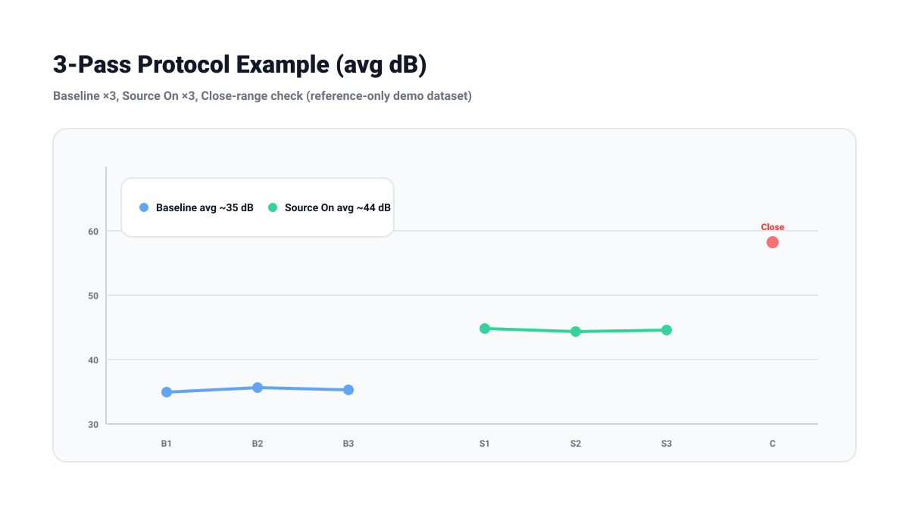
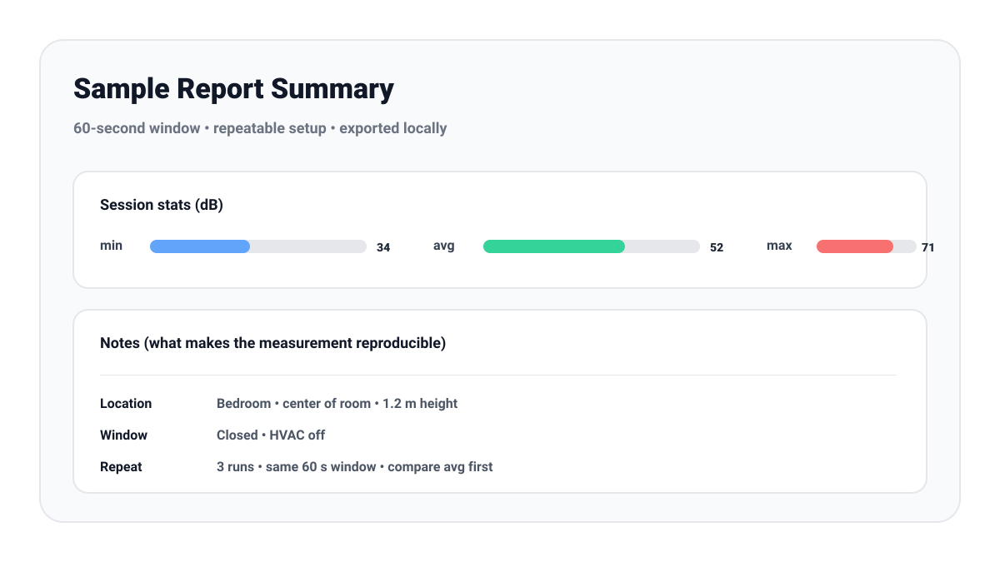

How to Measure Decibels Accurately (Without a Pro Meter)
Updated Mar 30, 2026 • 9 min read
Most people don’t need laboratory-grade precision. What you really need is a reading you can trust enough to make decisions: is the environment consistently loud, did your change reduce noise, and are you spending too long above safe exposure limits. The fastest way to improve accuracy with a phone or browser meter is not a new app—it’s a better method.
The Real Goal: Comparable, Repeatable Measurements
A professional sound level meter is calibrated with specialized hardware. A phone or browser-based meter is typically reference-only. That said, you can still get high-quality results by focusing on repeatability: same position, same height, same orientation, same time window.
Practical tip: if your measurement method is consistent, the difference between “before” and “after” is often more useful than the exact number.
The 3-Pass Protocol (A Simple Method That Works)
Pass 1: Baseline (60 seconds)
- Stand where you care about the noise (bed, desk, classroom seat, workstation).
- Hold the device at ear height.
- Measure for 60 seconds and record the average.
Pass 2: Source On (60 seconds)
- Turn on the source (fan, vacuum, speaker system, machinery).
- Measure again from the exact same spot for 60 seconds.
- Compare Baseline vs Source On to get a meaningful delta.
Pass 3: Close-Range Check (15 seconds, optional)
- Move closer to the suspected source but keep the device orientation consistent.
- Measure for 15 seconds to find which component causes spikes.
Placement Rules That Prevent Bad Readings
- Measure at listener height: if you’re evaluating a crib, measure at crib level; for a desk, measure where your head is while working.
- Keep distance consistent: small distance changes near a source can swing readings.
- Don’t block the microphone: avoid palms, pockets, or fabric near the mic.
- Avoid corners for room averages: corners can over-emphasize bass and reflections.
Averaging: Why 60 Seconds Beats a “Quick Check”
A single dropped object or door slam can spike the max value, but it doesn’t represent the environment. For most home and office use, 30–60 seconds is a strong minimum. For traffic or workplaces with cycles, measure 2–5 minutes and note what was happening.
How to Interpret the Result
For hearing protection decisions, focus on the average level and how long you’re exposed. A reading that’s “a bit off” is still useful if it consistently places you in a risky zone. If you need structured documentation, use a repeatable log format and timestamps.
If you’re documenting a persistent noise issue, this guide shows how to collect more convincing evidence: How to Collect Valid Evidence with a Sound Meter.
Reproduce This Method with RealtimeSoundMeter
Here’s a simple way to replicate the 3-pass protocol and produce a reusable record. Use the Online Sound Meter, measure fixed 60-second windows, then save a report for each run.
- Pick one spot: mark location, height (ear level), and device orientation.
- Baseline ×3: record three 60-second runs with the source off.
- Source on ×3: record three 60-second runs with the source on, same placement.
- Optional close-range check: 15 seconds at a closer distance to identify what causes spikes.
- Save reports: click “Save Report” after each run so you have a timestamped artifact.


Example dataset (download + copy/paste)
Download the CSV and replace the values with your own: measurement-3pass-example.csv.
| Pass | Run | Window | avg dB | max dB | Notes |
|---|---|---|---|---|---|
| Baseline | 1 | 60 s | 34.8 | 41.2 | Bedroom door closed, HVAC off |
| Baseline | 2 | 60 s | 35.4 | 42.8 | Same placement, same orientation |
| Source On (fan) | 1 | 60 s | 44.6 | 50.7 | Fixed distance marker on floor |
Quick Checklist (Copy/Paste)
- Same location, same height, same orientation
- 60-second average recorded
- Baseline measured first
- Source-on measured second
- Distance and context noted
- Repeat once to confirm stability